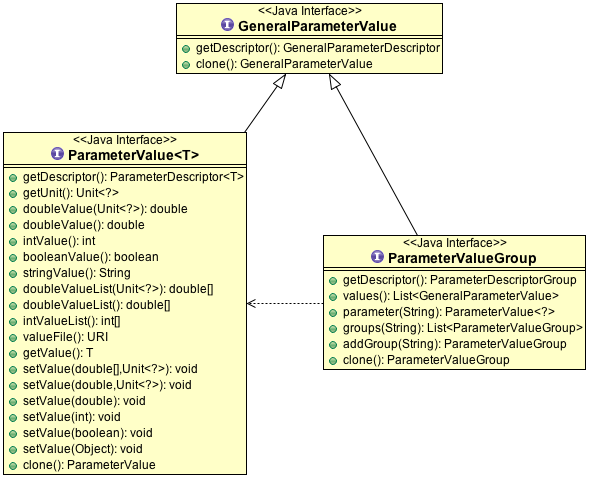
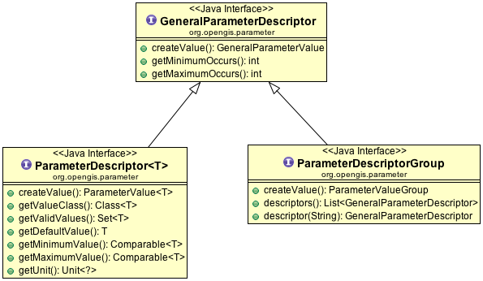

Parameter¶
Next up we have a quick API for representing parameters coming out of the OGC Abstraction specification.
Much like with with Record and RecordType we have a split between ParameterValue and ParameterDescriptor.
Here is what ParameterValue looks like:
And the associated descriptors:
We have a default implementation in gt-referencing which we can use for a code example of both pieces working together:
final DefaultParameterDescriptor RANGE =
new DefaultParameterDescriptor("Range", 15.0, -30.0, +40.0, null)
ParameterValue value = (ParameterValue) RANGE.createValue();
value.setValue( 2.0 );
Parameters are used in a few sections of the library, noticeability when working with imagery and referencing.